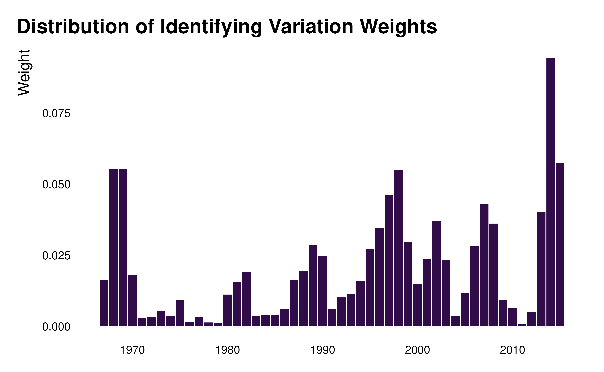
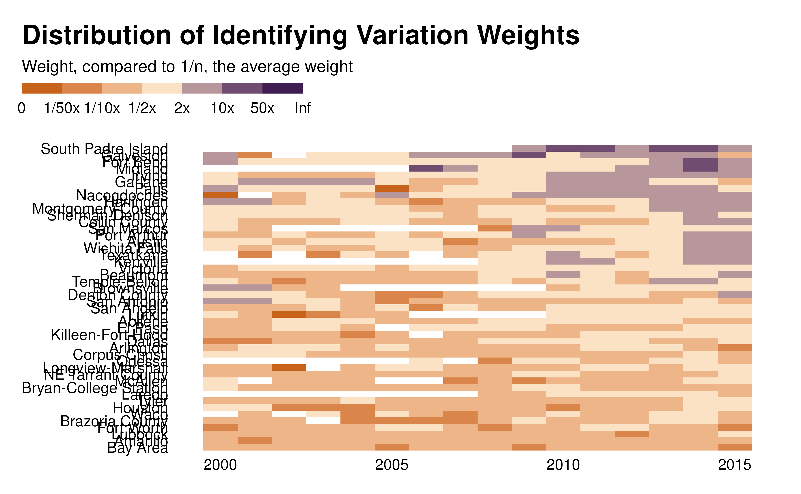

Visualization of Identifying Variation Weights
idid_viz_weights.RdMakes a graph to visualize the identifying variation weights (a heatmap or a bar chart, depending on the number of dimensions specified)
Usage
idid_viz_weights(
reg,
var_interest,
var_x,
var_y,
order = "",
colors = c("#C25807", "#FBE2C5", "#300D49"),
keep_labels = TRUE,
...
)Arguments
- reg
A regression object.
- var_interest
A string. The name of the main variable of interest.
- var_x
A variable in the data set used in
regto plot on the x-axis.- var_y
A variable in the data set used in
regto plot on the y-axis (optional). If not specified, produces a bar chart.- order
A string (either "x", "y" or "xy") describing whether the graph should be order, along the x or y axis or both. If anything else is specified, no specific ordering will be applied.
- colors
A string vector of colors for the palette. I recommend to pass a vector of 3 distinct colors, with a lighter color in the middle, constituting a diverging scale. It allows a clear distinction between contributing and non contributing observations.
- keep_labels
A boolean (optional). If FALSE, removes y labels and ticks. This option is useful for panels with a large number of individuals.
- ...
Additional elements to pass to the regression function when partialling out controls.
Value
A ggplot2 graph of identifying variation weights.
If var_y is specified, returns a heatmap whose color represents a categorized version of the identifying variation weights (the categorization prevents the vizualisation from being driven by extremely large weights).
If var_y is not specified, returns a bar chart representing the weights in each group.
Details
If there is more than on observation by group (i.e. for one category in var_x or in var_x x var_y), the weight of the group is computed by summing individual weights in that group, removing missing values.
Examples
# example one dimension
reg_ex_one_dim <- ggplot2::economics |>
transform(year = substr(date, 1, 4) |> as.numeric()) |>
lm(formula = unemploy ~ pce + uempmed + psavert + pop + year)
idid_viz_weights(reg_ex_one_dim, "pce", var_x = year) +
ggplot2::labs(x = NULL)

# example with two dimensions
reg_ex_two_dim <- ggplot2::txhousing |>
lm(formula = log(sales) ~ median + listings + as.factor(date) + city)
idid_viz_weights(reg_ex_two_dim, "median", year, city, order = "y") +
ggplot2::labs(x = NULL, y = NULL)
#> Warning: Removed 1434 rows containing non-finite outside the scale range
#> (`stat_log_weight()`).
